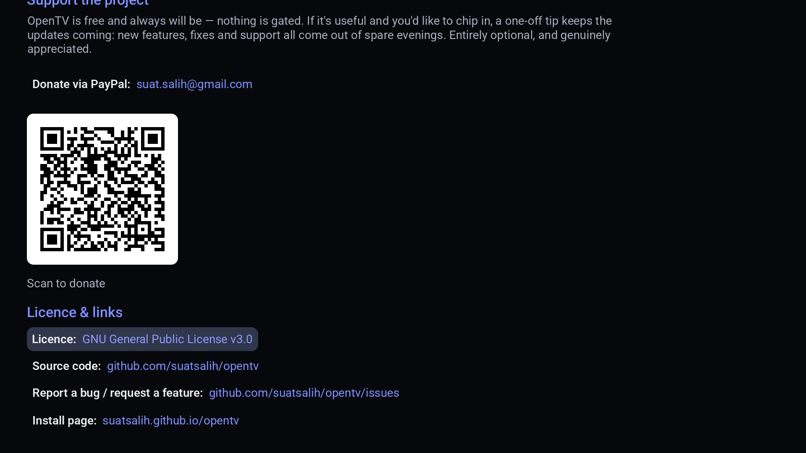

OpenTV
A free, open-source IPTV player for your TV.
No account
No subscription
No servers of ours
GPL-3.0

The guide — the channel you're on keeps playing while you browse.
What you get
A full IPTV player — you bring the playlist, it does the rest. Everything below is in the app today.
Live TV & guide
- Full EPG guide (XMLTV) that scrolls, survives restarts and refreshes in the background
- Live preview — the highlighted channel plays, muted, in the guide
- Catch-up / archive on providers that offer it
- Programme reminders
- Channel numbers, direct number entry and a last-channel button
Recording (DVR)
- Record to the box, a plugged-in USB / external drivenew, or a NAS over SMB
- Schedule from the guide, or series-link a whole show
- Scheduled and failed recordings show when they were set, with one-tap retrynew
- Keeps recording when you leave the app or the TV sleepsnew
- Play recordings back in-app — even from your other devices
Movies & series
- Cinematic Movies & Shows — big artwork, cast, director and genrenew
- “More with this cast” and by-genre rows, Plex-stylenew
- Optional TMDB back-fill for missing posters and synopsis — your own free key, kept on-devicenew
- Loads instantly — the catalogue is cached, not re-fetched each timenew
- Video-on-demand with resume and Continue Watching
- Per-profile watch history
- One search across channels, movies and shows
Channel management
- Channel Manager: browse by category, hide or favourite
- Manage from a phone or laptop — rename, reorder, hide, favouritenew
- Keep multiple providers separate instead of merged
- Parental PIN and hidden categories
Player
- Subtitle, audio-track, quality and aspect-ratio pickers
- Picture-in-picture
- HLS and MPEG-TS streams
- Hand off to VLC or MX Player; sleep timer
Setup & sync
- Xtream login, or an M3U playlist with XMLTV guide
- Set up from your phone by scanning a code, or on the TV
- Free sync between your own devices — favourites, history, even recordings — over your wifi or Tailscale, with no server
- Multiple profiles
Live TV and the guide are free. No account, no ads, no servers of ours.
OpenTV Premium is a one-off in-app purchase — not a subscription — for several providers,
catch-up, recording, movies & series and profiles.
Screenshots



Open source
OpenTV is free software under the GPL-3.0. The complete source code is on GitHub — anyone can read it, build it and check exactly what the app does.
OpenTV supplies no channels. It's a player, like VLC. You point it at an
IPTV service you already pay for. The project has no affiliation with any provider and
doesn't help you find one.